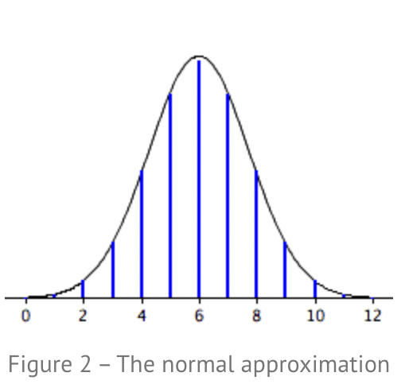

"History and derivation of the normal distribution. Touch, at least, the following three i mportant perspectives, putting them into an historical context to understand how the idea developed:
1) as approximation of binomial (De Moivre)
2) as error curve (Gauss)
3) as limit of sum of independent r.v.'s (Laplace)"
History and derivation of the normal distribution. Touch, at least, the following three important perspectives, putting them into an historical context to understand how the idea developed:
1) as approximation of binomial (De Moivre)
2) as error curve (Gauss)
3) as limit of sum of independent r.v.’s (Laplace)
Normal distribution:
In probability theory, a normal (or Gaussian or Gauss or Laplace–Gauss) distribution is a type of continuous probability distribution for a real-valued random variable. The general form of its probability density function is
De Moivre and the normal distribution as approximation of binomial
Abraham de Moivre, an 18th century statistician and consultant to gamblers, was often called upon to make these lengthy computations. de Moivre noted that when the number of events (coin flips) increased, the shape of the binomial distribution approached a very smooth curve.
De Moivre reasoned that if he could find a mathematical expression for this curve, he would be able to solve problems such as finding the probability of 60 or more heads out of 100 coin flips much more easily. This is exactly what he did, and the curve he discovered is now called the “normal curve.”

Errors following a normal distribution:
The importance of the normal curve stems primarily from the fact that the distributions of many natural phenomena are at least approximately normally distributed. One of the first applications of the normal distribution was to the analysis of errors of measurement made in astronomical observations, errors that occurred because of imperfect instruments and imperfect observers. Galileo in the 17th century noted that these errors were symmetric and that small errors occurred more frequently than large errors. This led to several hypothesized distributions of errors, but it was not until the early 19th century that it was discovered that these errors followed a normal distribution. Independently, the mathematicians Adrain in 1808 and Gauss in 1809 developed the formula for the normal distribution and showed that errors were fit well by this distribution.
Central limit theorem and the sum of random variables:
This same distribution had been discovered by Laplace in 1778 when he derived the extremely important central limit theorem. Laplace showed that even if a distribution is not normally distributed, the means of repeated samples from the distribution would be very nearly normally distributed, and that the larger the sample size, the closer the distribution of means would be to a normal distribution.
Given a population with a finite mean μ and a finite non-zero variance σ2, the sampling distribution of the mean approaches a normal distribution with a mean of μ and a variance of σ2/N as N, the sample size, increases.
“Create a simulation with graphics to convince yourself of the uniform convergence of the empirical CDF to the theoretical distribution (Glivenko-Cantelli theorem). You may use a simple random variable of your choice for such a demonstration”
“Generate sample paths of jump processes which at each time considered t = 1, …, n perform jumps computed as:
- σ R(t) (and/or divide by sqrt(1/t) in case you want to make constant the variance at each time by “normalizing” the sum, or divide by sqrt(1/n) in order to obtain standard deviation = σ at last time [the so called “scaling limit”])
where R(t) is a [-1,1] Rademacher random variable
- σ Z(t), where Z(t) is a N(0,1) random variable”
“Do a research about the random walk process and its properties. Compare your finding with your applications drawing your personal conclusions. Explain based on your exercise the beaviour of the distribution of the stochastic process (check out “Donsker’s invariance principle”). What are, in particular, its mean and variance at time n ?”
In mathematics, a random walk is a mathematical object, known as a stochastic or random process, that describes a path that consists of a succession of random steps on some mathematical space such as the integers.
In the simplest context the walk is in discrete time, that is a sequence of random variables (Xₜ) = (X₁, X₂, …) indexed by the natural numbers. However, it is also possible to define random walks which take their steps at random times, and in that case, the position X t has to be defined for all times t ∈ [0,+∞).
A natural way to think about the random walk is in term of paths. The outcome path s = (s1, s2, . . .) can be identified with the sequence (t, st), t = 0, 1, . . . of ordered pairs, or better yet with the graph of the piecewise linear function that connects the points (t, st) as shown in the next figure.
We have the Donsker’s theorem (also known as Donsker’s invariance principle), it is a functional extension of the central limit theorem.
It says the following:
Let X₁,X₂,X₃,… be a sequence of independent and identically distributed random variables with mean 0. Let Sₙ be as follows:
We can define the stochastic process S = Sₙ where n ∈ N is known as a random walk. We define the diffusively rescaled random walk as
Donker’s invariance principle states that the random function W⁽ⁿ⁾ converges in distribution to a standard Brownian motion W as n -> ∞.
So it stands that, whatever is the distribution of Xᵢ, the distribution of the values acquired by W⁽ⁿ⁾ will be the same as the distribution of the values of a standard Brownian motion if n -> ∞.
This concept can be seen practically in the application 9_A_2.
When the simple walk is plotted we have that the distribution of the values is converging more and more to a distribution N(0,1) which is the same distribution of the values of the standard Brownian motion plotted in the second part of the video shown in the presentation of the application.
For the simple random walk, as already said before, for each instant t we have E Sₜ = 0 and Var Sₜ= t and they are equal to the variance and expected value of the standard Brownian motion.